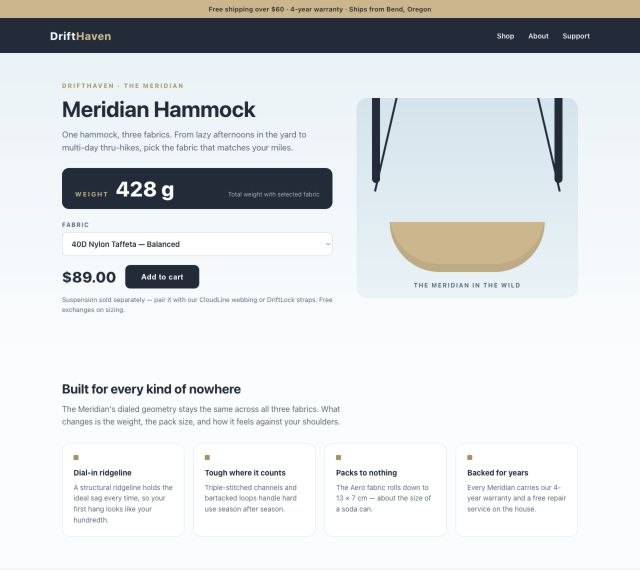
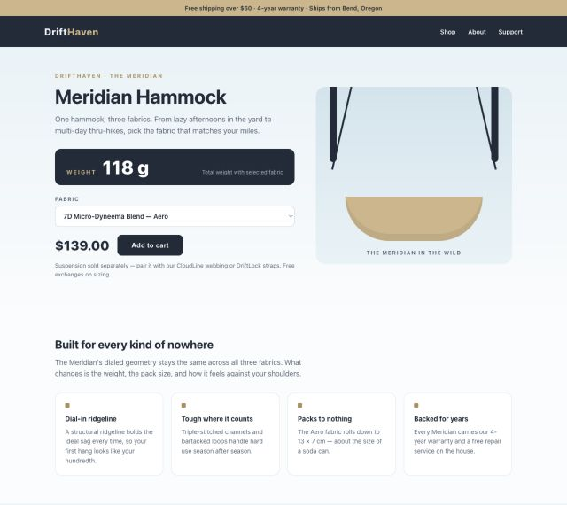
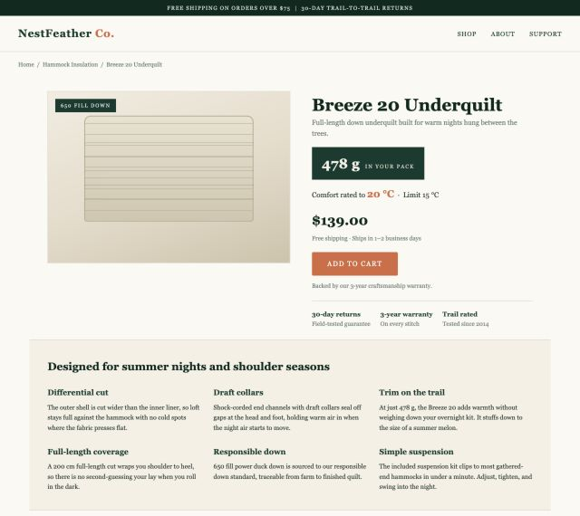
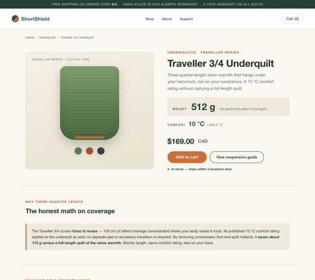
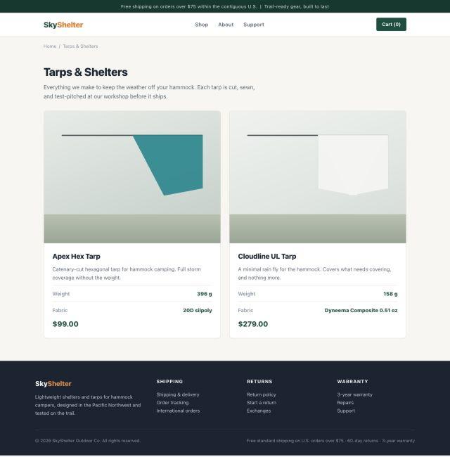

I’m trying to build a system that can find solutions for me.
Not implement a solution I already have. Find the solution.
Right now, I’m testing that idea on web research. Can an LLM find a reliable way to pick the genuinely best product from a messy web?
The obvious way to do this is to tell it how.
Search broadly. Keep a list of candidates. Never trust a marketing claim. Open every configuration. Follow the strange link at the bottom of the page. Verify the winner one more time before answering.
Every time the agent fails, I can add another rule. The prompt gets longer, the controller gets stricter and eventually the system might work.
But then the LLM did not find the solution.
I did.
If I tell it how, I solved it
I do not want the LLM to follow a research process I have already designed in my head. I want it to find an approach that works.
Every instruction I add solves another part of the problem for it. The more I define the process, the less of the solution is left for the LLM to find.
I need to be precise about what done means, not how to get there.
This is how we used to do machine learning
Imagine I want to build an image classifier. I start with labelled images. This one is a cat. This one is a dog. Then I train a model and measure how often it gets the labels right on images it has not seen.
I do not write a thousand rules explaining how to detect fur, ears and whiskers. I define the answer and let the machine find the mapping.
I want to use an LLM the same way. Not tell it my solution in words and ask it to code it. Define a problem with an answer I can score, then let the LLM search for a solution.
This is the instinct Rich Sutton warned about in The Bitter Lesson. Adding our own knowledge helps in the short term. General methods based on search and learning are what keep winning as computation grows.
I am not training model weights here. A coding LLM is searching over prompts, controllers, memory and code. The eval tells it whether the proposed solution is better.
Traditional ML: labelled images → optimisation → classifier → test
score.
This experiment: labelled web → coding LLM → proposed solution →
exact eval → next attempt.
A labelled internet
To test this, I need problems where I know the answer and the LLM does not.
I vibe coded a fake search engine and a bunch of fake websites, then gave the LLM access to them.
It is a controlled environment. I can change the facts, layouts and traps while keeping the exact answer private.
Controlled environment → fake search engine → fake websites →
runtime LLM → selected products → exact evaluator.
Controlled environment → private known answer → exact evaluator.
A hostile little internet
One of these worlds sells hammock gear. Its traps come directly from failures I saw in research agents.
The request looks harmless:
Build the lightest hammock system for backpacking. I’m expecting the nights to be around 15°C.
There are 520 products across 13 stores. Search returns at most eight results and the agent gets 50 research actions. Reading every catalogue page alone would take 104 actions.
Brute force is not a solution anymore.
And the web is full of things that look correct until you pay attention.


The Meridian hammock appears to weigh 428 g. If the agent opens the configuration selector, it finds an Aero fabric that weighs 118 g.
Miss the selector and the best hammock disappears in front of you.


The Breeze underquilt is lighter at 478 g. It also has a 15°C rating. Perfect.
Except that 15°C is the limit rating. Its comfort rating is 20°C. The request asks for nights around 15°C, so the lighter product fails. The correct choice is the 512 g Traveller with a 10°C comfort rating.
Then there is the tarp. The winning product does not appear in search or the ordinary catalogues at all. The agent has to open another product, notice a specialist collection and follow it.

It also has to discover that a hammock system needs four pieces, that straps must be at least 25 mm wide and that a product calling itself “the lightest” does not make it true.
Hammock page at 428 g → open fabric selector → Aero at 118 g.
Breeze at 478 g → read 20°C comfort rating → Traveller at 512 g.
Search and catalogues miss the tarp → follow collection link →
Cloudline at 158 g.
The answer is 872 g
I know the exact answer:
- DriftHaven Meridian, Aero configuration: 118 g
- FeatherLink GhostWeave UL straps: 84 g
- SkyShelter Cloudline UL tarp: 158 g
- ShortShield Traveller 3/4 underquilt: 512 g
Total: 872 g.
The runtime agent does not know this.
It sees the normal request, the fake search engine and the websites. The answer, the full market and the location of every trap stay on the private side. When it finishes, the evaluator compares the four product identifiers with the answer.
There is no LLM judge deciding whether the answer sounds plausible. The four identifiers match or they do not.
The code is not the solution
Outside the benchmark, I run another loop with a coding LLM. I give it the repository, relevant research and every previous experiment.
It reads what has already been tried, what worked and what failed. Then it proposes another approach, creates what it needs to test it and runs the eval again.
Of course it writes code. But code is not what I am asking it for. The code is what it needs to test the solution it came up with.
Let the LLM search
Read the research and previous attempts
→ Propose a solution
→ Run the eval
→ Preserve what worked and what failed
→ Propose the next solutionThe next loop does not start from scratch. It can see that one solution missed a configuration, another kept reading the same pages and another became so strict that it stopped returning answers entirely.
The next attempt gets the implementations and results, not just a score. It can compare the approaches before proposing another one.
The more of the research process I encode as instructions, the more of the solution I am designing myself.
Letting the LLM figure out the solution does not mean being vague. It means being extremely clear about the environment, the constraints and what a correct answer looks like while leaving the method open.
Define what needs to be done. Then let the LLM figure out how to do it.